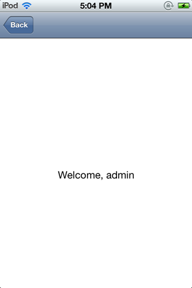
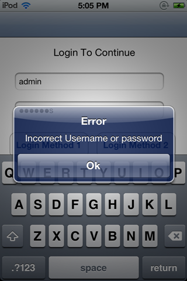
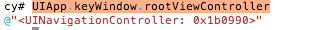
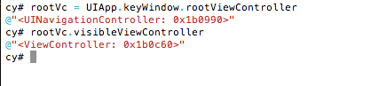
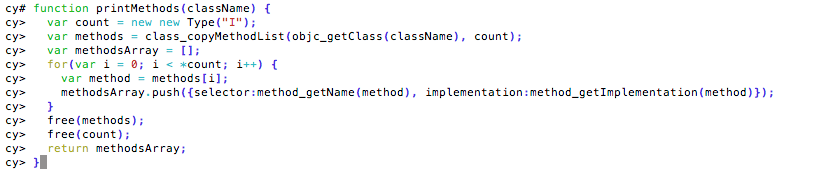
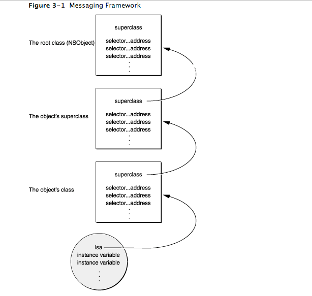
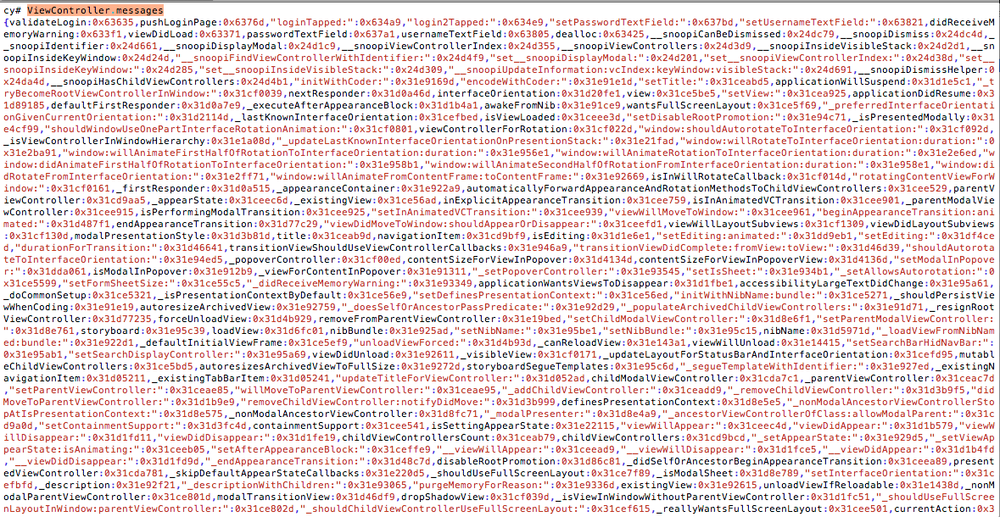
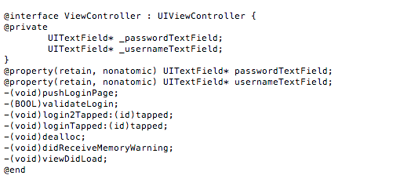
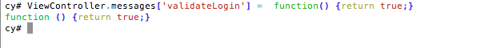
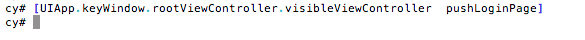

In the previous article, we looked at how we can install custom apps on our device without a developer certificate. In this article, we will look at how we can perform method Swizzling using Cycript on a sample application.
The first thing is to download the sample Xcode project. You can download the Xcode project from here. Or you can also just download the binary file on your device from here. If you have installed the Xcode project, you will have to build the Xcode project using a self signed certificate.The previous article talks about this in great detail. If you have downloaded the binary, you can directly run it on a jailbroken device without any issues but to get a look at the source code, it is recommended to download the Xcode project.
Also please make sure to sign the Xcode project with your own certificate.
Click to Enlarge
Once you have the app running on your device, ssh into your device and hook into the running process using Cycript.
You can hook into any running process with this command cycript -p [APP_ID]
Click to Enlarge
As you can see on the device, this application has a login form. Please note that for this article, we will only be bypassing login on tap of the Login Method 1 button.

The username and password are admin:password. It will take us to the admin page.

If we enter an incorrect username/password combination, we will be prompted with an alert.

Our goal hence is to bypass this login view.
So first, lets find the root view controller of this application. Use this command in cycript UIApp.keyWindow.rootViewController

Ok, since the login page is the first view that we get to see in the application, we can be sure that the view controller class responsible for displaying this view is a part of the navigation controller that we found with the previous command. We can find the current view by finding the visibleViewController property of the navigation controller

Perfect. Now let’s write a function to print out all the methods for this view controller. This method is taken from the Cycript tricks page. I recommend you to have a look at this page for many useful code snippets.
Here is the function i am using.
function printMethods(className) {
var count = new new Type("I");
var methods = class_copyMethodList(objc_getClass(className), count);
var methodsArray = [];
for(var i = 0; i < *count; i++) {
var method = methods[i];
methodsArray.push({selector:method_getName(method), implementation:method_getImplementation(method)});
}
free(methods);
free(count);
return methodsArray;
}

Now lets print out the methods for the current view controller. Please note that the parameter this method takes is the className, which in this case is ViewController
Click to Enlarge
Another way to know about the method names is by using the isa.messages property. According to Apple’s documentation isa is basically a pointer to the class structure.
Here is a line taken from the same page.
When a new object is created, memory for it is allocated, and its instance variables are initialized. First among the object’s variables is a pointer to its class structure. This pointer, called isa, gives the object access to its class and, through the class, to all the classes it inherits from.
This image from Apple’s documentation will make things more clear.

So what is the messages property ? Well, first we must know what is a dispatch table. A dispatch table is a table containing entries that associate method selectors with the class-specific addresses of the methods they identify. Let’s have a look at this image taken from Apple’s documentation.
Click to Enlarge
So now, it is easy to guess that the messages property is the complete list of messages that could be sent to an instance of the class or the class itself. This will be a huge list because the isa pointer will pick messages from all the superclasses also, leading up to NSObject. A very important line to be noted in the image above is this. This is the way that method implementations are chosen at runtime—or, in the jargon of object-oriented programming, that methods are dynamically bound to messages.
Since the methods are dynamically bound to messages at runtime, it is possible for us to change a method implementation for a particular message.
In this case, let’s print out the messages for the App Delegate class.
Click to Enlarge
Just using the messages property will also work.
Click to Enlarge
In this case, the view controller that we are concerned with is the one used to display the login page, which we found out earlier to be named as ViewController. So let’s display all the messages for this VC.

On the top of the output, you could see some of the methods for this VC.
Click to Enlarge
The method validateLogin looks interesting. Let’s have a look at this method from the class-dump-z output. In case you are not familiar with class-dump-z, please have a look at the 2nd part of this series.
Here is the information that we get for the ViewController class from its class-dump-z output.

As we can see,the method validateLogin returns a BOOL value. Well, it can be assumed that this method checks whether the username and password are correct and returns a YES or NO accordingly. With Cycript, we can change the implementation for a particular message. So let’s change the implementation to something that always returns TRUE.

So the R.H.S contains a javascript function that always returns true. Let’s now tap on Login Method 1 in the app.
As you can see, the authentication was successful and the app let us through. We have just performed method swizzling using Cycript to bypass a login form.
Some other cool things
Now that we have seen how method swizzling works, it would be interesting to know some other way to bypass this authentication. From the class-dump-z output, we can figure out that once validateLogin returns TRUE, the method pushLoginPage gets called. Some other names for such methods could have been pushUserPage, or pushLoginSuccessfulPage etc. Well, we don’t need the validation to be true. We can always call this method ourselves.

Since this is an instance method, we got to the instance using UIApp.keyWindow.rootViewController.visibleViewController and then called the method .Please note that this may lead to crashes or inconsistent data as the properties of the pushed View Controller may depend on the login information entered.If you are up for another challenge, try bypassing the login form after tapping on Login Method 2. We will discuss how to bypass this in later articles.
Conclusion
In this article we looked at some Method Swizzling techniques using Cycript. In later articles we will discuss more automation techniques and better tools that we can use to achieve this goal. We will also look at how we can use gdb for performing runtime analysis and otool for gathering other kinds of information.